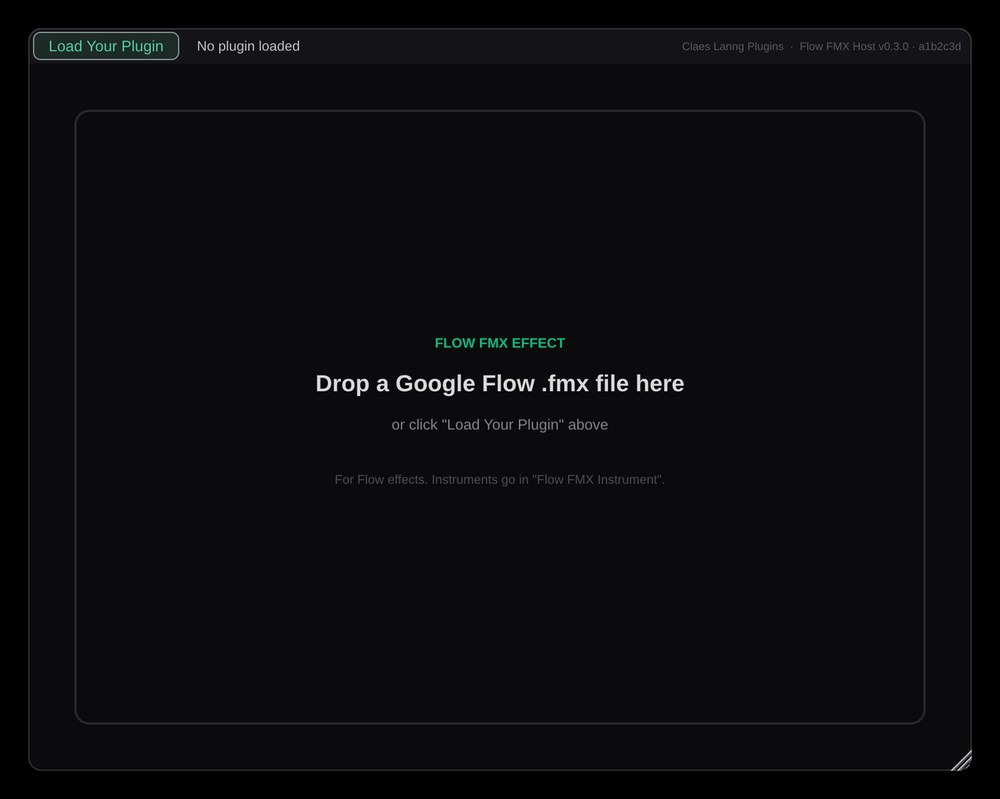
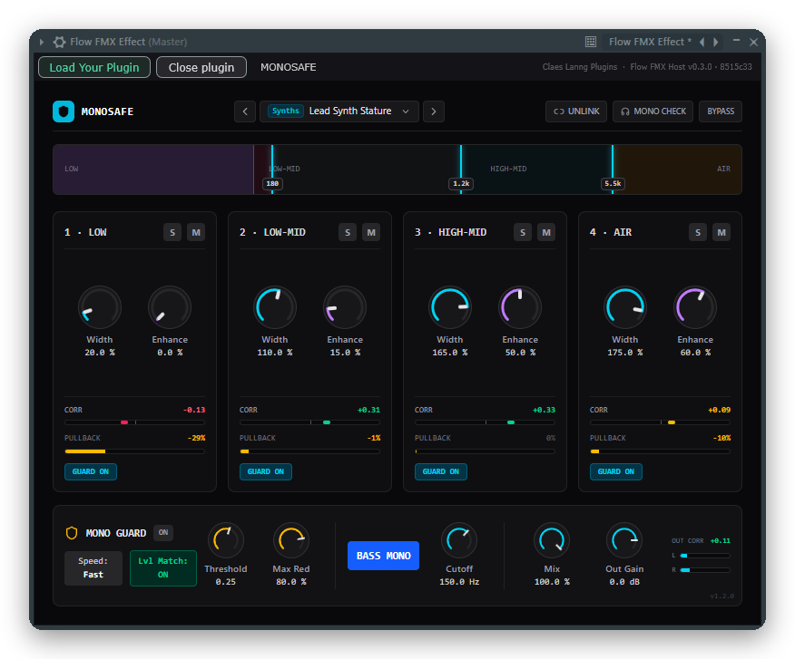

Flow FMX Host
Run the plugins you build in Google Flow Music inside FL Studio on Windows.
Version 0.3. Free. VST3 for Windows 10 and 11, tested in FL Studio.

.fmx files you make yourself.Your Flow plugins, on Windows
Google Flow Music lets you build your own instruments and effects and export them as .fmx files, but its own plugin only runs on macOS. Flow FMX Host opens those files on Windows.
- Their own interface
- Each
.fmxshows the interface it was designed with, exactly as in Flow. - The original sound
- It runs the plugin's own sound engine. Nothing is re-created or approximated.
- Full automation
- Every control shows up by name in your DAW, ready to automate.
- Saved with your project
- The
.fmxis stored inside the project, so it still opens if the file moves. - Drag and drop
- Drop audio samples onto the plugin, or drop an
.fmxon the window to load it. - Resizable
- The interface scales to any window size, and remembers it.
Two plugins in one download
One for instruments and one for effects.
Flow FMX Instrument
For synths and samplers. Shows up in FL Studio as a generator in the Channel Rack.

Flow FMX Effect
For effects. Shows up in FL Studio as an effect for a mixer slot.

Made in Flow, running in FL Studio
Two more plugins by Claes Lanng Plugins, built in Google Flow Music. They're examples, and aren't part of the download.


Install
Needs Windows 10 or 11 (64-bit) and the Microsoft Edge WebView2 Runtime, which almost every Windows PC already has.
- Download
FlowFMX-Windows-x64.zipand unzip it. - Copy both
.vst3folders intoC:\Program Files\Common Files\VST3. - In FL Studio, open Options, then Manage plugins, and click Find more plugins.
- Add Flow FMX Instrument to the Channel Rack, or Flow FMX Effect to a mixer slot.
- Click Load Your Plugin and choose your
.fmxfile, or drag the file onto the window.
If the plugin window stays blank, install the Evergreen WebView2 Runtime from Microsoft.